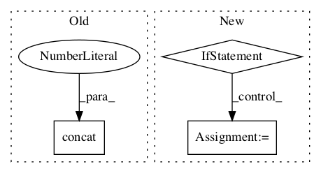

b374ed078f48895d9079b884b79fc36756ecc584,finetune/base_models/gpt/featurizer.py,,gpt_featurizer,#Any#Any#Any#Any#Any#Any#Any#Any#,241

Before Change
weighted_C, context_embed_weights, axes=[[2], [0]]
) // [batch_size, seq_length, context_dim] * [context_dim, n_embed] = [batch_size, seq_length, n_embed]
c_embed = norm(c_embed, tf.get_variable_scope())
seq_feats = tf.concat([seq_feats, c_embed], axis=2)
c_embed = tf.reduce_sum(c_embed, axis=1)
clf_h = tf.concat([clf_h, c_embed], axis=1)
out = {
After Change
h, shape=tf.concat((initial_shape[:-1], [config.n_embed]), 0)
)
if config.use_auxiliary_info:
clf_h, seq_feats = add_auxiliary(
context, context_dim, clf_h, seq_feats, config, train
)
out = {
"embed_weights": embed_weights,
"features": clf_h,
"sequence_features": seq_feats,
In pattern: SUPERPATTERN
Frequency: 3
Non-data size: 3
Instances
Project Name: IndicoDataSolutions/finetune
Commit Name: b374ed078f48895d9079b884b79fc36756ecc584
Time:
Author: null
File Name: finetune/base_models/gpt/featurizer.py
Class Name:
Method Name: gpt_featurizer
Project Name: tensorflow/lattice
Commit Name: 1c75176947730de8322acf6ad996096625e92e3a
Time:
Author: null
File Name: tensorflow_lattice/python/rtl_layer.py
Class Name: RTL
Method Name: call
Project Name: tensorflow/models
Commit Name: 6cd426d917d10f3f334cb009d12db527ef81750f
Time:
Author: null
File Name: official/nlp/xlnet/data_utils.py
Class Name:
Method Name: _local_perm